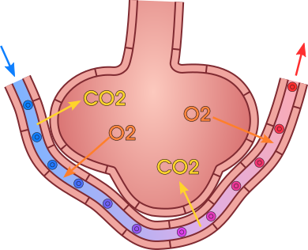
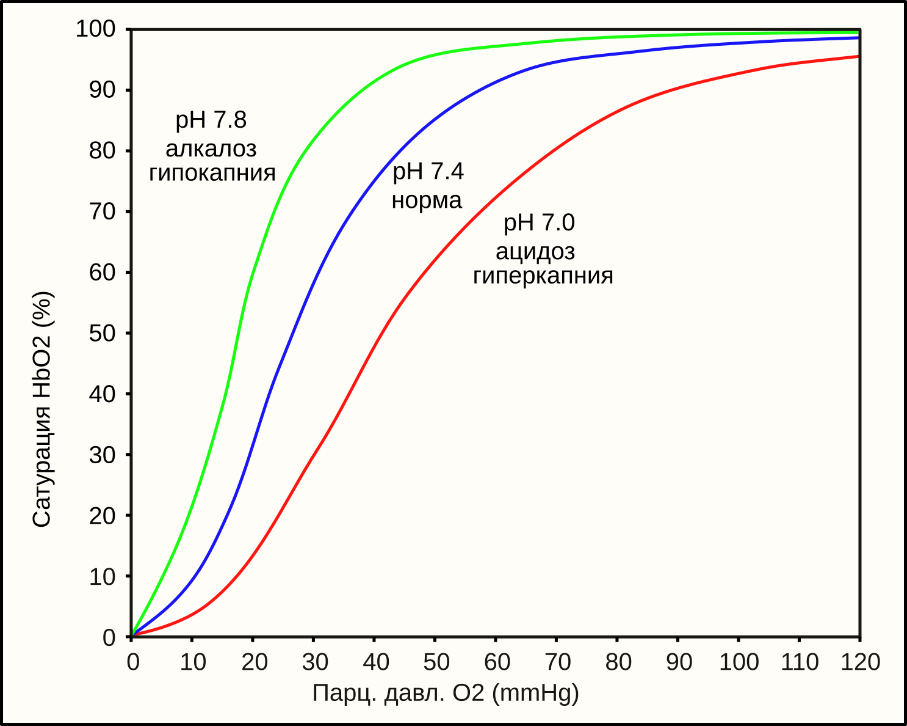

Дыхание: вентиляция, газообмен, транспорт и регуляция
1. Задача системы дыхания и четыре её этапа
Главная физиологическая задача системы дыхания заключается в поддержании газового гомеостаза артериальной крови, то есть постоянства парциального давления кислорода (PO2) на уровне около 95–100 мм рт. ст., парциального давления углекислого газа (PCO2) на уровне 35–45 мм рт. ст. и водородного показателя (pH) в пределах 7,35–7,45. Кислород необходим клеткам для непрерывного синтеза аденозинтрифосфата (АТФ) в процессе окислительного фосфорилирования в митохондриях. Углекислый газ, образующийся как конечный продукт декарбоксилирования органических субстратов в цикле Трикарбоновых кислот, представляет собой летучую кислоту, выведение которой предотвращает развитие метаболического и дыхательного ацидоза.[1, с. ?]

Процесс дыхания не сводится только к механическому вдоху и выдоху, а представляет собой непрерывную цепь из четырёх последовательных физиологических этапов, нарушение любого из которых приводит к тканевой гипоксии:
- Внешнее дыхание (вентиляция лёгких): физический процесс массопереноса воздуха между окружающей атмосферой и альвеолами лёгких. Вентиляция обеспечивает постоянное обновление газового состава альвеолярного воздуха, поддерживая в нём высокий уровень PO2 (около 100–104 мм рт. ст.) и низкий уровень PCO2 (около 40 мм рт. ст.).
- Диффузия газов в лёгких: пассивный перенос кислорода из альвеолярного пространства в кровь лёгочных капилляров и углекислого газа из крови в альвеолы через альвеоло-капиллярную мембрану. Движущей силой этого процесса является градиент парциальных давлений газов по обе стороны мембраны.
- Транспорт газов кровью: конвекционный перенос растворенных и химически связанных газов током крови от лёгких к периферическим тканям (кислород) и от тканей к лёгким (углекислый газ). Кислород транспортируется преимущественно в связи с гемоглобином эритроцитов (оксигемоглобин), а углекислый газ — в виде гидрокарбонат-ионов (HCO3-), карбгемоглобина и в физически растворённом состоянии.
- Тканевое дыхание (внутреннее дыхание): включает два подэтапа — диффузию газов из капилляров системного кровотока через интерстициальную жидкость в клетки и непосредственно клеточное дыхание, то есть утилизацию кислорода в дыхательной цепи митохондрий с образованием воды, углекислого газа и энергии в виде АТФ.
2. Механика вдоха и выдоха, дыхательные мышцы, плевральное давление
Вентиляция лёгких осуществляется за счёт циклических изменений объёма грудной полости. Согласно закону Бойля — Мариотта, при постоянной температуре давление газа в закрытом пространстве обратно пропорционально его объёму. Легкие не имеют собственной мышечной ткани и следуют за изменениями объёма грудной клетки пассивно. Воздух перемещается в лёгкие и из них исключительно по градиенту давления между атмосферным воздухом (принимаемым за 0 см вод. ст.) и альвеолярным давлением (Palv).[2, с. ?]
Вдох (инспирация) — это всегда активный процесс, требующий затраты метаболической энергии мышц. Для совершения спокойного вдоха привлекаются основные дыхательные мышцы:
- Диафрагма: куполообразная мышца, разделяющая грудную и брюшную полости, иннервируемая диафрагмальным нервом (сегменты C3–C5 спинного мозга). При сокращении купол диафрагмы уплощается и опускается на 1,5–2 см вглубь брюшной полости, что увеличивает вертикальный (кранио-каудальный) размер грудной клетки. На долю диафрагмы приходится около 75% всего объёма вентилируемого воздуха при спокойном дыхании.
- Наружные межрёберные мышцы: иннервируются межрёберными нервами (T1–T11). Их волокна идут сверху вниз и вперёд. При сокращении они поднимают рёбра и вращают их вокруг оси, проходящей через шейки рёбер, что приводит к увеличению переднезаднего и поперечного размеров грудной клетки (механизм «ручки ведра» и «рычага помпы»).
При глубоком или форсированном вдохе (например, при физической нагрузке или одышке) подключаются вспомогательные инспираторные мышцы: грудино-ключично-сосцевидные (поднимают грудину), лестничные (поднимают I и II рёбра) и малые грудные мышцы.
Выдох (экспирация) при спокойном дыхании является пассивным процессом. Он не требует сокращения мышц и происходит за счёт потенциальной энергии, накопленной во время вдоха. Когда инспираторные мышцы расслабляются, лёгкие и грудная клетка спадаются под действием сил собственной эластической тяги, возвращаясь к исходному объёму.
Форсированный выдох — активный процесс. В нём участвуют экспираторные мышцы:
- Мышцы брюшного пресса (прямая, поперечная, наружная и внутренняя косые мышцы живота): при сокращении повышают внутрибрюшное давление, смещая органы брюшной полости и купол диафрагмы вверх в грудную полость.
- Внутренние межрёберные мышцы: ход их волокон противоположен наружным межрёберным мышцам. Сокращаясь, они тянут рёбра вниз и назад, уменьшая объём грудной клетки.
Существование плевральной полости и герметичность плевральной щели играют ключевую роль в передаче движений грудной клетки на лёгочную паренхиму. В плевральной щели находится тонкий слой (около 10–20 мкм) серозной жидкости, которая снижает трение между висцеральным и париетальным листками плевры и обеспечивает их капиллярное сцепление.
Давление в плевральной щели (интраплевральное или плевральное давление, Ppl) в норме всегда ниже атмосферного, то есть является «отрицательным». Это отрицательное давление возникает в результате противоборства двух разнонаправленных эластических сил: эластической тяги лёгких, стремительно пытающихся спасться внутрь к корню лёгкого, и эластической тяги грудной клетки, которая при малых объёмах стремится расшириться наружу.
В конце спокойного выдоха (в состоянии функциональной остаточной ёмкости) плевральное давление составляет около -5 см вод. ст. (или -3,7 мм рт. ст. относительно атмосферного). Во время спокойного вдоха объём грудной полости увеличивается, растяжение лёгких возрастает, сила их эластической тяги увеличивается, и Ppl снижается до -8 см вод. ст. (около -6 мм рт. ст.). При форсированном вдохе Ppl может падать до -30 см вод. ст., а при форсированном выдохе с закрытой голосовой щелью (проба Вальсальвы) становится положительным и может достигать +50 см вод. ст. и выше.
Разность между альвеолярным и плевральным давлением называется транспульмональным давлением (Ptp = Palv - Ppl). Транспульмональное давление представляет собой ту силу, которая удерживает альвеолы в расправленном состоянии и препятствует их спадению. В физиологических условиях транспульмональное давление всегда положительно.
3. Эластические свойства лёгких, сурфактант, растяжимость, гистерезис
Способность лёгких изменять свой объём в ответ на изменения транспульмонального давления определяется их эластическими свойствами. Эластическая тяга лёгких — это сила, с которой лёгкие стремятся уменьшить свой объём. Она обусловлена двумя факторами:[3, с. ?]
- Наличием эластических и коллагеновых волокон в межальвеолярных перегородках и стенках бронхиол (составляет около 1/3 всей эластической тяги).
- Поверхностным натяжением пленки жидкости, выстилающей внутреннюю поверхность альвеол (составляет около 2/3 эластической тяги).
На границе раздела фаз «жидкость — газ» молекулы воды испытывают более сильное притяжение друг к другу, чем к молекулам газа. Это создает поверхностное натяжение, стремящееся сократить площадь поверхности альвеолы до минимума и схлопнуть её. Согласно закону Лапласа для сферы, давление спадения (P), создаваемое поверхностным натяжением (T) в сфере радиусом r, выражается формулой:
P = 2T / r
Из этой формулы следует, что при одинаковом поверхностном натяжении T в мелких альвеолах (с меньшим радиусом r) давление спадения должно быть значительно выше, чем в крупных. Это привело бы к тому, что воздух из мелких альвеол перетекал бы в крупные, вызвало бы массовый ателектаз (схлопывание) мелких альвеол и перерастяжение крупных. Однако в живом организме этого не происходит благодаря наличию сурфактанта.
Сурфактант — это поверхностно-активное вещество, синтезируемое и секретируемое альвеолярными пневмоцитами II типа. По химической природе сурфактант состоит на 90% из липидов (основной компонент — дипальмитоилфосфатидилхолин, ДПФХ) и на 10% из специфических белков (SP-A, SP-B, SP-C, SP-D). Молекулы ДПФХ обладают амфифильными свойствами: гидрофильные «головки» погружены в водную фазу выстилки альвеолы, а гидрофобные жирнокислотные «хвосты» вытолкнуты в газовую среду.
Функции сурфактанта вытекают из его способности динамически изменять поверхностное натяжение:
- Снижение поверхностного натяжения: сурфактант уменьшает поверхностное натяжение воды с 72 мН/м до 1–15 мН/м, существенно облегчая растяжение лёгких на вдохе и снижая работу дыхания.
- Стабилизация альвеол различного размера: по мере уменьшения радиуса альвеолы при выдохе молекулы сурфактанта сближаются и упаковываются плотнее, резко снижая поверхностное натяжение T. В результате давление спадения P в мелких альвеолах выравнивается с давлением в крупных альвеолах, что предотвращает ателектазирование.
- Предупреждение отека лёгких: снижение поверхностного натяжения уменьшает «присасывающий» эффект жидкости из капилляров в интерстиций и альвеолы, предотвращая фильтрацию плазмы крови.
Растяжимость (комплаенс, C) — это показатель, характеризующий эластические свойства лёгких. Она определяется как изменение объёма лёгких (ΔV), приходящееся на единицу изменения транспульмонального давления (ΔPtp):
C = ΔV / ΔPtp
В норме растяжимость здоровых лёгких взрослого человека составляет около 0,2 л/см вод. ст. (или 200 мл/см вод. ст.). При эмфиземе лёгких, когда происходит разрушение эластических волокон межальвеолярных перегородок, растяжимость патологически возрастает (лёгкие легко растягиваются, но теряют эластическую отдачу). При фиброзе лёгких или дефиците сурфактанта межальвеолярный матрикс становится жестким, и растяжимость резко падает, требуя огромных усилий для вдоха.
График зависимости объёма лёгких от транспульмонального давления при вдохе и выдохе образует петлю, расстояние между ветвями которой называют гистерезисом. Петля гистерезиса показывает, что объём лёгких при фиксированном транспульмональном давлении всегда выше на кривой выдоха, чем на кривой вдоха. Это связано с необходимостью преодоления сил поверхностного натяжения и вовлечения (открытия) спавшихся альвеол в самом начале вдоха, а также со сдвигом ориентировки молекул сурфактанта при изменении площади альвеолярной поверхности.
4. Сопротивление дыхательных путей и работа дыхания
При движении воздуха по воздухоносным путям возникает сопротивление, называемое аэродинамическим сопротивлением дыхательных путей (Raw). Оно выражается соотношением между градиентом давления (ΔP = Patm - Palv) и объёмной скоростью воздушного потока (V'):[4, с. ?]
Raw = ΔP / V'
Поток воздуха в дыхательных путях подчиняется закону Пуазейля, согласно которому сопротивление трубки прямо пропорционально вязкости газа (η) и длине трубки (L), и обратно пропорционально четвёртой степени её радиуса (r):
R = (8ηL) / (πr4)
Небольшие изменения диаметра дыхательных путей оказывают критическое влияние на сопротивление. Однако вопреки анатомическому представлению о малом калибре мелких бронхиол, основным местом сопротивления в бронхиальном дереве являются не мелкие бронхиолы (диаметром менее 2 мм), а средние и крупные бронхи (с 4-й по 8-ю генерацию деления). Это объясняется тем, что суммарное поперечное сечение миллионов параллельно разветвлённых мелких бронхиол огромно, и сопротивление в них суммируется по правилу параллельных электрических цепей, составляя лишь 20% от общего Raw.
Тонус гладких мышц бронхов и, следовательно, сопротивление дыхательных путей регулируются нервными и гуморальными факторами:
- Парасимпатическая нервная система: медиатор ацетилхолин воздействует на M3-холинорецепторы гладкой мускулатуры бронхов, вызывая бронхоспазм и увеличение секреции слизи (повышает Raw).
- Симпатическая система и адреналин: активация β2-адренорецепторов вызывает расслабление гладкой мускулатуры бронхов и бронходилатацию (снижает Raw).
- Местные химические факторы: понижение PCO2 в мелких бронхиолах вызывает их сужение, а повышение PCO2 — расширение, что способствует оптимизации соотношения вентиляции и перфузии. Избыток гистамина и лейкотриенов при аллергических реакциях провоцирует сильный бронхоспазм.
Работа дыхания — это энергия, затрачиваемая дыхательными мышцами на совершение акта вентиляции. Она делится на две основные составляющие:
- Эластическая работа (около 65% от всей работы): затрачивается на преодоление эластической тяги тканей лёгких и грудной клетки, а также поверхностного натяжения альвеол.
- Неэластическая (вязкостная) работа (около 35%): расходуется на преодоление аэродинамического сопротивления движению воздуха по бронхам и вязкостного трения смещаемых тканей друг о друга.
В покое на работу дыхания расходуется всего 3–5% от общего потребления кислорода организмом (около 1–2 мл O2 в минуту). Однако при тяжелой физической нагрузке, обструктивных заболеваниях (астма, ХОБЛ) или снижении растяжимости лёгких энергозатраты на дыхание могут возрастать в десятки раз, доходя до 30% от всего метаболизма, что приводит к утомлению дыхательной мускулатуры.
5. Лёгочные объёмы и ёмкости, спирометрия, ОФВ1 и индекс Тиффно
Для оценки функционального состояния системы внешнего дыхания используются показатели лёгочных объёмов и ёмкостей. Ёмкостью в физиологии дыхания называют сумму двух или более лёгочных объёмов. Измерение этих параметров проводится методом спирометрии и спирографии.[5, с. ?]
Различают 4 базовых лёгочных объёма:
- Дыхательный объём (ДО): объём воздуха, вдыхаемый или выдыхаемый при каждом спокойном дыхательном цикле. В норме составляет около 500 мл.
- Резервный объём вдоха (РОвд): максимальный объём воздуха, который человек может дополнительно вдохнуть после спокойного вдоха. Составляет 2000–3000 мл.
- Резервный объём выдоха (РОвыд): максимальный объём воздуха, который можно дополнительно выдохнуть после спокойного выдоха. Составляет 1000–1500 мл.
- Остаточный объём лёгких (ООЛ): объём воздуха, остающийся в лёгких после максимального выдоха. Составляет 1000–1200 мл. Этот объём не может быть измерён обычной спирометрией, так как не покидает лёгкие; его определяют методами бодиплетизмографии или вымывания гелия.
На основе объёмов рассчитывают 4 лёгочные ёмкости:
- Емкость вдоха (ЕВ): сумма ДО и РОвд (ЕВ = ДО + РОвд), равная 2500–3500 мл. Показывает максимальный объём воздуха, который можно вдохнуть от уровня спокойного выдоха.
- Функциональная остаточная ёмкость (ФОЕ): сумма РОвыд и ООЛ (ФОЕ = РОвыд + ООЛ), равная 2200–2500 мл. Это объём воздуха в лёгких в конце спокойного выдоха, когда эластическая тяга лёгких уравновешена эластической тягой грудной клетки. ФОЕ сглаживает колебания концентрации O2 и CO2 в альвеолах во время фаз вдоха и выдоха.
- Жизненная ёмкость лёгких (ЖЕЛ): максимальный объём воздуха, который можно выдохнуть после максимального вдоха (ЖЕЛ = ДО + РОвд + РОвыд). У взрослых мужчин она составляет 3500–5000 мл, у женщин — 3000–4000 мл.
- Общая ёмкость лёгких (ОЁЛ): суммарный объём воздуха в лёгких после максимального вдоха (ОЁЛ = ЖЕЛ + ООЛ), составляющий 5000–6000 мл.
| Показатель | Аббревиатура | Состав показателя | Среднее значение (мужчины) | Среднее значение (женщины) |
|---|---|---|---|---|
| Дыхательный объём | ДО | — | 500 мл | 400–500 мл |
| Резервный объём вдоха | РОвд | — | 3000 мл | 1900 мл |
| Резервный объём выдоха | РОвыд | — | 1100 мл | 800 мл |
| Остаточный объём лёгких | ООЛ | — | 1200 мл | 1000 мл |
| Жизненная ёмкость лёгких | ЖЕЛ | ДО + РОвд + РОвыд | 4600 мл | 3200 мл |
| Функциональная остаточная ёмкость | ФОЕ | РОвыд + ООЛ | 2300 мл | 1800 мл |
| Общая ёмкость лёгких | ОЁЛ | ЖЕЛ + ООЛ | 5800 мл | 4200 мл |
Для дифференциальной диагностики нарушений вентиляции применяют форсированную спирометрию. При этом пациент совершает максимально глубокий вдох, а затем выдыхает воздух с максимальной скоростью и силой. Измеряют следующие ключевые параметры:
- Форсированная жизненная ёмкость лёгких (ФЖЕЛ): полный объём воздуха, выдохнутый при форсированном выдохе.
- Объём форсированного выдоха за первую секунду (ОФВ1): объём воздуха, выдохнутый за самую первую секунду форсированного выдоха. Это важнейший динамический показатель проходимости воздухоносных путей.
- Индекс Тиффно: процентное отношение ОФВ1 к ЖЕЛ или ФЖЕЛ (ОФВ1 / ФЖЕЛ × 100%). У здорового человека этот индекс составляет 75–80%.
По снижению индекса Тиффно ниже 70% диагностируют обструктивные нарушения (например, бронхиальную астму или ХОБЛ), при которых резко возрастает сопротивление дыхательных путей выдоху. При рестриктивных нарушениях (например, при фиброзе лёгких), когда уменьшается объём действующей лёгочной ткани, ЖЕЛ и ФЖЕЛ пропорционально падают, но индекс Тиффно остаётся в пределах нормы или даже превышает её.
6. Мёртвое пространство и альвеолярная вентиляция
Не весь воздух, поступающий в дыхательные пути во время вдоха, участвует в газообмене. Часть его остаётся в структурах, где диффузия газов с кровью не происходит. Это пространство называется мёртвым пространством.[6, с. ?]
Различают следующие виды мёртвого пространства:
- Анатомическое мёртвое пространство (VD): объём воздухоносных путей от ноздрей и рта до конечных (терминальных) бронхиол включительно (носовая полость, глотка, гортань, трахея, бронхи различных генераций). В этих отделах отсутствует альвеолярно-капиллярная мембрана. У взрослого человека анатомическое мёртвое пространство составляет примерно 150 мл (или ориентировочно 2 мл на 1 кг массы тела).
- Альвеолярное мёртвое пространство: объём альвеол, которые вентилируются воздухом, но не перфузируются кровью из-за отсутствия или спазма капилляров, либо объём альвеол, где вентиляция существенно превышает перфузию. У здоровых людей в положении стоя оно минимально (несколько миллилитров), но резко возрастает при патологии (например, при тромбоэмболии лёгочной артерии).
- Физиологическое (тотальное) мёртвое пространство: сумма анатомического и альвеолярного мёртвого пространства. В норме у здорового человека физиологическое мёртвое пространство практически равно анатомическому. Для его расчёта используют формулу Бора, основанную на измерении парциального давления CO2 в артериальной крови (PaCO2) и в смешанном выдыхаемом воздухе (PECO2):
VD = ДО × ((PaCO2 - PECO2) / PaCO2)
Из-за наличия мёртвого пространства необходимо четко разделять понятия минутного объёма дыхания и альвеолярной вентиляции.
Минутный объём дыхания (МОД или V'E) — это общий объём воздуха, проходящий через лёгкие за 1 минуту. Он равен произведению дыхательного объёма (ДО) на частоту дыхания (ЧД):
V'E = ДО × ЧД
При спокойном дыхании (ДО = 500 мл, ЧД = 12 вдохов в минуту): V'E = 500 мл × 12 = 6000 мл/мин (6 л/мин).
Альвеолярная вентиляция (V'A) — это объём свежего атмосферного воздуха, поступающий непосредственно в альвеолы и участвующий в газообмене за 1 минуту. Она рассчитывается с учётом анатомического мёртвого пространства (VD):
V'A = (ДО - VD) × ЧД
При стандартных физиологических параметрах: V'A = (500 мл - 150 мл) × 12 = 350 мл × 12 = 4200 мл/мин (4,2 л/мин).
Паттерн (структура) дыхания оказывает решающее влияние на эффективную альвеолярную вентиляцию. Частые и поверхностные вдохи гораздо менее эффективны для газообмена, чем глубокое и редкое дыхание, даже при одинаковом минутном объёме дыхания. Если человек дышит поверхностно (ДО = 250 мл, ЧД = 24 в минуту, МОД = 6000 мл/мин), то альвеолярная вентиляция составит лишь (250 - 150) × 24 = 2400 мл/мин. Если же дыхание глубокое и редкое (ДО = 1000 мл, ЧД = 6 в минуту, МОД = 6000 мл/мин), альвеолярная вентиляция возрастает до (1000 - 150) × 6 = 5100 мл/мин, что существенно повышает насыщение крови кислородом и элиминацию углекислого газа.
7. Состав альвеолярного газа и уравнение альвеолярного газа
Газовый состав воздуха, заполняющего альвеолы, принципиально отличается от состава атмосферного и вдыхаемого воздуха. Атмосферный воздух при стандартном барометрическом давлении 760 мм рт. ст. состоит преимущественно из азота (около 78%), кислорода (около 21%), углекислого газа (около 0,04%) и незначительного количества инертных газов. Парциальное давление кислорода в сухом атмосферном воздухе рассчитывается как произведение общего давления на фракционную концентрацию и составляет около 160 мм рт. ст.[7, с. ?]
При входе в воздухоносные пути вдыхаемый воздух быстро согревается до температуры тела (37 °C) и полностью насыщается водяными парами. Давление насыщенного водяного пара при этой температуре составляет ровно 47 мм рт. ст. Наличие водяного пара разбавляет смесь остальных газов, уменьшая их суммарное парциальное давление до 713 мм рт. ст. (760 мм рт. ст. минус 47 мм рт. ст.). В результате парциальное давление кислорода во вдыхаемом увлажненном воздухе, обозначаемое как PIO2, падает до значения: (760 мм рт. ст. - 47 мм рт. ст.) × 0,21 = 149,7 мм рт. ст. (округляется до 150 мм рт. ст.).
Попадая в альвеолярное пространство, вдыхаемый воздух смешивается с остаточным объемом легких, из которого непрерывно поглощается кислород и в который непрерывно выделяется углекислый газ из протекающей по капиллярам крови. По этой причине парциальное давление кислорода в альвеолах (PAO2) существенно ниже, чем во вдыхаемом воздухе, и составляет в норме около 100 мм рт. ст., а парциальное давление углекислого газа (PACO2) возрастает до 40 мм рт. ст. Давление азота в альвеолярном газе составляет около 573 мм рт. ст., а давление водяного пара остается неизменным — 47 мм рт. ст.
Точный расчет парциального давления кислорода в альвеолах проводится с помощью уравнения альвеолярного газа. В его упрощенной форме физиологический механизм описывается следующим соотношением:
PAO2 = PIO2 - (PACO2 / R)
В этой формуле параметр R обозначает дыхательный коэффициент (дыхательный обменный отношение), представляющий собой отношение объема выделенного углекислого газа к объему поглощенного кислорода за единицу времени. При смешанном питании метаболизм тканей потребляет около 250 мл/мин кислорода и выделяет около 200 мл/мин углекислого газа, поэтому R в норме равен 0,8. Подставляя эти значения, получаем: PAO2 = 150 - (40 / 0,8) = 150 - 50 = 100 мм рт. ст.
Уравнение показывает ключевую физиологическую зависимость: уровень альвеолярной вентиляции прямо определяет PACO2, а следовательно, и PAO2. При гиповентиляции PACO2 возрастает (например, до 80 мм рт. ст.), что неизбежно приводит к падению PAO2 до 50 мм рт. ст. при дыхании обычным воздухом, вызвав тяжелую альвеолярную гипоксию.
8. Диффузия через аэрогематический барьер, закон Фика, ограничение диффузией и перфузией
Перенос газов между альвеолярным пространством и кровью лёгочных капилляров осуществляется исключительно путем пассивной диффузии через аэрогематический барьер (альвеоло-капиллярную мембрану). Этот ультраструктурный барьер состоит из нескольких последовательных слоёв:[1, с. ?]

- Слой сурфактанта, выстилающий внутреннюю поверхность альвеолы;
- Альвеолярный эпителий, состоящий из плоских пневмоцитов I типа;
- Базальная мембрана альвеолярного эпителия;
- Узкое интерстициальное пространство;
- Базальная мембрана капиллярного эндотелия;
- Эндотелиоциты лёгочного капилляра;
- Слой плазмы крови;
- Мембрана и цитоплазма эритроцита.
Несмотря на многослойность, суммарная толщина аэрогематического барьера чрезвычайно мала и составляет от 0,2 до 0,5 мкм, а общая площадь диффузионной поверхности здоровых легких достигает 70–100 м², что создает идеальные условия для быстрой газового обмена.
Скорость диффузии газов через мембрану описывается законом Фика. Согласно этому закону, объем газа (Vgas), переносимый через барьер в единицу времени, прямо пропорционален площади мембраны (A), коэффициенту диффузии газа (D) и разности парциальных давлений газа по обе стороны мембраны (P1 - P2), и обратно пропорционален толщине мембраны (T):
Vgas = (A × D × (P1 - P2)) / T
Коэффициент диффузии D зависит от свойств самого газа: он прямо пропорционален растворимости газа в жидкой фазе мембраны (S) и обратно пропорционален квадратному корню из его молекулярной массы (MW). Хотя молекула CO2 тяжелее молекулы O2 (44 Да против 32 Да), растворимость CO2 в воде и липидах биологических мембран примерно в 24 раза выше, чем у кислорода. В результате итоговая скорость диффузии углекислого газа через аэрогематический барьер оказывается примерно в 20 раз выше, чем у кислорода. По этой причине нарушения диффузии в клинической практике в первую очередь приводят к гипоксии, в то время как элиминация CO2 длительное время остается нормальной.
Перенос любого газа из альвеолы в капилляр ограничен либо процессами диффузии через мембрану, либо величиной кровотока (перфузии) через капилляр:
Ограничение перфузией означает, что газ настолько быстро диффундирует через мембрану, что его парциальное давление в плазме крови успевает полностью сравняться с парциальным давлением в альвеоле еще до того, как кровь покинет капилляр. Классическим примером служит закись азота (N2O). Оксид азота не связывается с гемоглобином, поэтому при его вдыхании PN2O в плазме стремительно нарастает, достигая равновесия с альвеолярным давлением всего за 0,1 с. Дальнейший переход N2O из альвеолы прекращается, так как исчезает градиент давлений. Единственный способ увеличить поступление N2O в организм — это увеличить скорость протекания крови, то есть лёгочный кровоток.
Ограничение диффузией происходит в том случае, если газ связывается с компонентами крови с очень высокой сродственностью или если сама мембрана оказывает высокое сопротивление. Классический пример — угарный газ (монооксид углерода, CO). Поступая в капилляр, CO мгновенно связывается с гемоглобином, из-за чего парциальное давление растворенного CO в плазме остаётся практически нулевым на всем протяжении капилляра. Градиент давлений (PACO - PcCO) сохраняется высоким постоянным образом. В этих условиях объем перенесенного газа полностью определяется физическими свойствами аэрогематического барьера и не зависит от скорости кровотока.
Кислород в нормальных условиях покоя ведет себя как газ с ограничением перфузией. Время прохождения эритроцита через лёгочный капилляр в покое составляет около 0,75 с. Парциальное давление кислорода в венозной крови, поступающей в капилляр, составляет PvO2 = 40 мм рт. ст. Благодаря градиенту давлений (100 - 40 = 60 мм рт. ст.) O2 интенсивно диффундирует в кровь. Парциальное давление кислорода в капиллярной крови выравнивается с альвеолярным (достигает 100 мм рт. ст.) уже за 0,25 с, то есть на первой трети длины капилляра. Запас времени в 0,50 с обеспечивается организму на случай физической нагрузки, когда скорость кровотока возрастает, а время транзита эритроцита сокращается до 0,25 с. Однако при утолщении аэрогематического барьера (при фиброзе легких) скорость диффузии O2 падает, и его транспорт становится ограниченным диффузией, приводя к развитию hypoxemia при физической нагрузке.
9. Лёгочный кровоток, зоны Веста, гипоксическая вазоконстрикция
Малый круг кровообращения является системой с низким гидродинамическим сопротивлением и высоким давлением наполнения. Систолическое давление в лёгочной артерии составляет в норме около 25 мм рт. ст., диастолическое — около 8 мм рт. ст., а среднее давление — 15 мм рт. ст. Давление в левом предсердии составляет около 5 мм рт. ст., поэтому движущий градиент давлений для лёгочного кровотока равен всего 10 мм рт. ст. (15 - 5 = 10 мм рт. ст.). Несмотря на малое давление, лёгочное русло принимает весь сердечный выброс правого желудочка (около 5,0 л/мин).[2, с. ?]
Из-за низких внутренних давлений в сосудах малого круга на распределение кровотока в легких колоссальное влияние оказывает гидростатическое давление Земли. В вертикальном положении человека расстояние от верхушек до оснований легких составляет около 30 см, что создает разницу гидростатического давления гидростатического столба крови примерно в 23 мм рт. ст. (около 1,8 мм рт. ст. на каждые 2 см высоты). Джон Вест разделил легкое на три физиологические зоны в зависимости от соотношения между альвеолярным давлением (PA), артериальным лёгочным давлением (Pa) и венозным лёгочным давлением (Pv):
Зона 1 ( верхушечная зона): PA > Pa > Pv. В этой зоне альвеолярное давление превышает давление в лёгочных артериолах и капиллярах. Капилляры сдавливаются снаружи и полностью спадаются. Кровоток в Зоне 1 отсутствует. Данная зона формирует альвеолярное мёртвое пространство. В норме у здорового человека в вертикальном положении Зона 1 практически отсутствует или выражена минимально, однако она может появляться при искусственной вентиляции легких с положительным давлением на выдохе или при выраженной гиповолемии и артериальной гипотензии.
Зона 2 (средняя зона): Pa > PA > Pv. Артериальное давление за счет гидростатического прибавка превышает альвеолярное, однако альвеолярное давление остается выше венозного. Перепончатый капилляр действует как сопротивление Старлинга (эффект водопада): величина кровотока определяется не разницей между артериальным и венозным давлением (Pa - Pv), а градиентом между артериальным и альвеолярным давлением (Pa - PA). По мере продвижения вниз по Зоне 2 гидростатическое давление растет, Pa увеличивается, и кровоток постепенно нарастает.
Зона 3 (базальная зона): Pa > Pv > PA. В нижних отделах легких как артериальное, так и венозное давление превышают альвеолярное. Капилляры постоянно открыты, находятся под внутренним трансмуральным давлением и расправлены. Кровоток здесь максимален и определяется классической разницей давлений в артериальном и венозном концах капилляра (Pa - Pv).
В отличие от сосудов большого круга кровообращения, которые при гипоксии расширяются для увеличения притока кислорода к тканям, гладкие мышцы лёгочных артериол реагируют на локальное снижение парциального давления кислорода сокращением. Этот физиологический механизм носит название гипоксической лёгочной вазоконстрикции (рефлекс Эйлера — Лильестранда).
Молекулярный механизм гипоксической вазоконстрикции связан с работой гладкомышечных клеток мелких лёгочных артериол (диаметром менее 500 мкм). При падении PAO2 в альвеоле ниже 70 мм рт. ст. митохондрии гладкомышечных клеток изменяют выработку активных форм кислорода или соотношение НАДФH/НАДФ, что приводит к закрытию потенциал-зависимых калиевых каналов (Kv). Накопление ионов K+ внутри клетки вызывает деполяризацию плазматической мембраны, открытие потенциал-зависимых кальциевых каналов L-типа и входящий ток ионов Ca2+ в цитоплазму. Повышение концентрации свободных ионов Ca2+ активирует киназу легких цепей миозина и вызывает стойкое сокращение гладкой мышцы.
Физиологическое значение гипоксической вазоконстрикции заключается в оптимизации соответствия между вентиляцией и перфузией. Если отдельная группа альвеол плохо вентилируется (например, перекрыта слизистой пробкой), PAO2 в ней падает. Локальная вазоконстрикция сужает артериолы, кровоснабжающие эту гипоксичную зону, и перенаправляет кровоток в хорошо вентилируемые участки легких. Тем самым предотвращается сброс неоксигенированной крови в левое сердце. Однако при тотальной гипоксии (например, при подъеме на большую высоту или при выраженной общей гиповентиляции) локальный адаптивный механизм становится патологическим: глобальная вазоконстрикция всех лёгочных артериол резко повышает общее лёгочное сосудистое сопротивление, приводя к острой лёгочной гипертензии и перегрузке правого желудочка.
10. Вентиляционно-перфузионные отношения и их неравномерность
Для обеспечения эффективного газообмена требуется не просто адекватная величина альвеолярной вентиляции (VA) и лёгочного кровотока (Q), но и их строгое локальное соответствие. Соотношение вентиляции к перфузии обозначается как VA/Q.[3, с. ?]
В среднем у здорового взрослого человека в покое альвеолярная вентиляция составляет около 4,0 л/мин, а суммарный лёгочный кровоток (сердечный выброс) — около 5,0 л/мин. Таким образом, идеальное среднее вентиляционно-перфузионное отношение для легкого в целом составляет:
VA/Q = 4,0 / 5,0 = 0,8
Однако в реальном вертикально расположенном легком вентиляционно-перфузионное отношение резко неравномерно по высоте вследствие гравитационных эффектов. Гравитация воздействует как на распределение крови, так и на распределение воздуха:
- Верхушки легких: Верхушечные альвеолы расправлены сильнее из-за массы нижележащей ткани легкого, растягивающей верхушку. Их исходный объем в конце выдоха велик, поэтому их комплайенс (растяжимость) ниже, и при вдохе туда поступает относительно меньше воздуха. Однако кровоток на верхушках снижен еще сильнее из-за высокого гидростатического сопротивления (Зона 1 или верх Зоны 2). Поскольку перфузия падает значительно быстрее, чем вентиляция, вентиляционно-перфузионное отношение на верхушках легких резко повышено и может достигать VA/Q ≈ 3,0.
- Основания легких: Базальные альвеолы в конце выдоха поджаты массой вышележащих отделов, их исходный объем мал, а растяжимость высока, поэтому при вдохе они получают наибольший объем воздуха (вентиляция высока). При этом кровоток в основаниях легких максимален (Зона 3). Поскольку увеличение кровотока превосходит увеличение вентиляции, отношение VA/Q в основаниях легких понижено и составляет около 0,6.
Неравномерность VA/Q приводит к тому, что парциальные давления газов в оттекающей от разных участков крови существенно различаются. В верхушечных отделах (при VA/Q = 3,0) PAO2 достигает 132 мм рт. ст., а PACO2 падает до 28 мм рт. ст. В базальных отделах (при VA/Q = 0,6) PAO2 снижается до 89 мм рт. ст., а PACO2 возрастает до 42 мм рт. ст.
Когда кровь из всех регионов легких смешивается в лёгочных венах, итоговое парциальное давление кислорода в смешанной артериальной крови (PaO2) оказывается равным примерно 95 мм рт. ст., что чуть ниже средневзвешенного альвеолярного PAO2 (100 мм рт. ст.). Это различие формирует физиологический альвеолярно-артериальный градиент по кислороду (P(A-a)O2), который в норме составляет от 5 до 10 мм рт. ст.
11. Шунт и альвеолярное мёртвое пространство как две крайности
Вентиляционно-перфузионные отношения в различных альвеолярных единицах могут варьировать от 0 до бесконечности (∞). Эти два граничных значения представляют собой крайние формы нарушения газообмена.[4, с. ?]
Ниже в таблице приведено сравнение физиологических характеристик идеальной альвеолярной единицы и двух крайних вариантов несбалансированности VA/Q.
| Параметр | Альвеолярное мёртвое пространство (VA/Q = ∞) | Идеальная единица (VA/Q = 0,8) | Право-левый шунт (VA/Q = 0) |
|---|---|---|---|
| Вентиляция (VA) | |||
| Перфузия (Q) | |||
| PAO2 в альвеоле | |||
| PACO2 в альвеоле | |||
| Ответ на оксигенотерапию (100% O2) |
Крайнность 1: VA/Q = 0 (Шунтирование крови).
Шунт представляет собой состояние, при котором кровь протекает через капилляры альвеол, полностью лишенных вентиляции (Q > 0, VA = 0). Венозная кровь проходит через легкие, не насыщаясь кислородом и не отдавая углекислый газ, после чего смешивается с оксигенированной кровью в лёгочных венах. Данное явление называется венозной примесью.
Различают анатомический и физиологический шунт. Анатомический шунт в норме составляет 1–2% от величины сердечного выброса за счет оттока венозной крови из бронхиальных вен и наименьших вен сердца (тебезиевых вен) непосредственно в левые отделы сердца. Патологический шунт возникает при ателектазе (спадении альвеол), полном заполнении альвеол экссудатом при пневмонии или отеке легких, а также при врожденных пороках сердца с сбросом крови справа налево (например, тетрада Фалло).
Важнейшим диагностическим признаком истинного шунта (VA/Q = 0) является его рефрактерность к ингаляции 100% кислорода. Подаваемый кислород не может попасть в спавшиеся или заполненные жидкостью альвеолы, и шунтируемая кровь продолжает поступать в артериальное русло с низким содержанием O2.
Крайность 2: VA/Q = ∞ (Альвеолярное мёртвое пространство).
Альвеолярное мёртвое пространство возникает в том случае, когда альвеола нормально вентилируется, но капиллярный кровоток в ней полностью отсутствует (VA > 0, Q = 0). Поступающий в такую альвеолу воздух не участвует в газообмене. Состав газа в неомываемой кровью альвеоле становится идентичным вдыхаемому увлажненному воздуху: PAO2 возрастает до 150 мм рт. ст., а PACO2 падает до 0 мм рт. ст.
Причиной образования альвеолярного мёртвого пространства является закупорка лёгочных сосудов (например, при тромбоэмболии лёгочной артерии, ТЭЛА) или выраженное падение артериального давления в малом круге. Сумма анатомического мёртвого пространства (воздухоносные пути объемом около 150 мл) и альвеолярного мёртвого пространства составляет физиологическое мёртвое пространство.
12. Транспорт кислорода: гемоглобин, кривая диссоциации оксигемоглобина, факторы сдвига, кислородная ёмкость крови
Кислород переносится кровью в двух формах: в виде физического раствора в плазме и в химически связанном с гемоглобином состоянии. Растворимость кислорода в плазме крови при температуре 37 °C крайне мала и составляет всего 0,003 мл O2 на 100 мл крови на каждый 1 мм рт. ст. парциального давления. При нормальном артериальном PaO2 = 100 мм рт. ст. в 100 мл артериальной крови растворено лишь 0,3 мл O2. При суммарном объеме крови 5 л это дает лишь 15 мл растворенного O2, что абсолютно недостаточно для обеспечения потребности тканей в кислороде, составляющей в покое около 250 мл/мин. Подавляющая часть кислорода (более 98%) транспортируется в связанном с гемоглобином эритроцитов виде.[5, с. ?]

Молекула гемоглобина (HbA) представляет собой тетрамер, состоящий из четырех полипептидных цепей (двух α- и двух β-цепей), каждая из которых связана с гемом — железосодержащим порфириновым комплексом. Атом железа в геме находится в двухвалентном состоянии (Fe2+). Каждая из четырех субъединиц способна обратимо присоединять одну молекулу O2, образуя оксигемоглобин (HbO2):
Hb + 4O2 ↔ Hb(O2)4
Максимальный объем кислорода, который может быть связан гемоглобином при его полном насыщении, называется кислородной ёмкостью крови. Один грамм чистого гемоглобина способен связать 1,34 мл O2 (константа Гюфнера; теоретическое значение составляет 1,39 мл, однако присутствие в крови небольших фракций неактивных форм гемоглобина — метгемоглобина и карбоксигемоглобина — снижает среднее реальное значение до 1,34 мл). При нормальной концентрации гемоглобина [Hb] = 150 г/л (15 г на 100 мл крови) кислородная ёмкость крови составляет:
15 г/100 мл × 1,34 мл/г = 20,1 мл O2 на 100 мл крови (или 20,1 объемных %).
Общее содержание кислорода в артериальной крови (CaO2) рассчитывается как сумма связанного и растворенного кислорода:
CaO2 = ([Hb] × 1,34 × SaO2) + (0,003 × PaO2)
Где SaO2 — насыщение (сатурация) артериальной крови кислородом, выраженное в долях единицы. При нормальных значениях SaO2 = 0,975 (97,5%) и PaO2 = 100 мм рт. ст.: CaO2 = (15 × 1,34 × 0,975) + 0,3 = 19,6 + 0,3 = 19,9 мл O2 / 100 мл крови.
Зависимость между парциальным давлением кислорода (P O2) и процентом насыщения гемоглобина (S O2) описывается кривой диссоциации оксигемоглобина. Эта кривая имеет характерную S-образную (сигмоидную) форму, что обусловлено эффектом кооперативного взаимодействия между субъединицами гемоглобина. Присоединение первой молекулы O2 к одной из цепей гемоглобина вызывает конформационные изменения во всей белковой глобуле (переход из напряженного T-состояния в расслабленное R-состояние), что резко увеличивает сродство остальных субъединиц к последующим молекулам кислорода.
Сигмоидная форма кривой диссоциации имеет важнейшее физиологическое значение:
- Верхний платообразный участок (P O2 от 70 до 100 мм рт. ст.): В этом диапазоне насыщение гемоглобина остается высоким (от 93% до 97,5%). Плато обеспечивает фактор безопасности: даже при умеренном падении альвеолярного PAO2 (например, при подъеме на небольшую высоту или при заболеваниях легких) насыщение крови кислородом и его доставка к тканям страдает незначительно.
- Крутой нисходящий участок (P O2 от 10 до 40 мм рт. ст.): Этот участок соответствует парциальным давлениям кислорода в тканях. В покое P O2 интерстиция составляет около 40 мм рт. ст., при этом сатурация гемоглобина падает до 75%. Это означает, что в тканях гемоглобин легко отдаёт около 25% своего кислорода. При интенсивной работе мышц P O2 в ткани падает до 20 мм рт. ст., и сатурация Hb снижается до 35%, что обеспечивает мощную отдачу O2 без необходимости кардинального падения давления в ткани.
Показателем сродства гемоглобина к кислороду служит величина P50 — парциальное давление O2, при котором гемоглобин насыщен кислородом ровно на 50%. В норме у человека при температуре 37 °C, pH 7,40 и P CO2 40 мм рт. ст. значение P50 составляет 26,8 мм рт. ст. (округляется до 27 мм рт. ст.).
Положение кривой диссоциации оксигемоглобина может смещаться под влиянием метаболических факторов:
Сдвиг кривой вправо означает снижение сродства гемоглобина к кислороду (величина P50 возрастает). Это облегчает отдачу кислорода оксигемоглобином в ткани. Сдвиг вправо вызывают следующие факторы:
- Повышение температуры ткани;
- Повышение парциального давления углекислого газа (P CO2);
- Снижение pH (увеличение концентрации ионов H+) — этот механизм известен как эффект Бора. Связывание ионов H+ и CO2 с аминокислотными остатками гемоглобина стабилизирует его T-состояние, снижая сродство к O2;
- Увеличение внутриэритроцитарной концентрации 2,3-дифосфоглицерата (2,3-ДФГ) — промежуточного продукта гликолиза, который встраивается в центральную полость тетрамера гемоглобина и прочно фиксирует T-состояние.
Все эти изменения характерны для интенсивно работающих тканей (например, сокращающейся скелетной мышцы), где образуется тепло, CO2 и молочная кислота. Благодаря сдвигу вправо гемоглобин сбрасывает значительно больше кислорода именно в тех тканях, которые больше всего в нем нуждаются.
Сдвиг кривой влево означает увеличение сродства гемоглобина к кислороду (величина P50 снижается). Гемоглобин прочнее удерживает кислород и хуже отдает его тканям. Сдвиг влево вызывают обратно противоположные изменения: гипотермия, падение P CO2, увеличение pH (алкалоз), снижение уровня 2,3-ДФГ, а также наличие в крови фетального гемоглобина (HbF, у которого γ-цепи не связывают 2,3-ДФГ) и патологических форм гемоглобина.
Транспорт углекислого газа в трёх формах, эффект Холдейна и эффект Бора
Углекислый газ (CO2), образующийся в тканях в процессе метаболизма, транспортируется венозной кровью к легким для последующей элиминации. В покое ткани выделяют в кровь около 200 мл углекислого газа в минуту. В физиологических условиях транспорт углекислого газа осуществляется в трёх основных формах: в физически растворённом состоянии, в виде карбаминовых соединений и в форме гидрокарбонат-ионов (HCO3-).[6, с. ?]
Первая форма — физически растворённый углекислый газ. Растворимость CO2 в плазме крови примерно в 24 раза выше растворимости кислорода, что обусловлено коэффициентом растворимости, равным 0,067 мл CO2 на 100 мл плазмы на 1 мм рт. ст. парциального давления. При венозном парциальном давлении углекислого газа (PvCO2), равном 45 мм рт. ст., в растворённом виде транспортируется около 3 мл/100 мл крови, что составляет от 5% до 7% от общего количества переносимого углекислого газа. Несмотря на относительно малую долю, именно физически растворённая фракция определяет парциальное напряжение газа в крови и создаёт градиент давления, необходимый для диффузии через биологические мембраны.
Вторая форма — карбаминовые соединения (карбаминогемоглобин). Углекислый газ способен обратимо связываться с незаряженными терминальными аминогруппами (NH2) молекул белков плазмы и, главным образом, гемоглобина. В эритроцитах этот процесс описывается реакцией взаимодействия CO2 с N-концевыми валиновыми остатками α- и β-цепей гемоглобина с образованием карбаминогемоглобина (HbNHCOOH). Эта реакция протекает быстро, без участия ферментов и не требует использования энергии ATP. На долю карбаминовых соединений приходится от 15% до 20% транспортируемого углекислого газа. Способность гемоглобина связывать CO2 напрямую зависит от степени его насыщения кислородом: дезоксигемоглобин обладает значительно более высоким сродством к углекислому газу, чем оксигемоглобин.
Третья, основная форма транспорте — гидрокарбонат-ионы (HCO3-), на долю которых приходится от 70% до 80% всего углекислого газа. Молекулы CO2, образующиеся в тканях, диффундируют через капиллярную стенку в плазму, а затем проникают внутрь эритроцитов. В цитоплазме эритроцитов содержится цитозольный фермент карбоангидраза II типа. Фермент катализирует гидратацию углекислого газа с образованием угольной кислоты:
CO2 + H2O ⇄ H2CO3 ⇄ H+ + HCO3-
Образовавшаяся угольная кислота (H2CO3) является слабой, но нестабильной кислотой и мгновенно диссоциирует на протон (H+) и гидрокарбонат-ион (HCO3-). Накопление гидрокарбонат-ионов внутри эритроцита создаёт концентрационный градиент, направленный наружу. Гидрокарбонат выходит из эритроцита в плазму крови по градиенту концентрации через специализированный анионный переносчик — белок полосы 3 (AE1, Anion Exchanger 1). Для сохранения электронейтральности цитоплазмы и плазмы выход каждого иона HCO3- сопровождается входящим током иона хлора (Cl-) в эритроцит. Этот процесс носит название феномена Гамбургера, или хлорного сдвига. В тканевых капиллярах содержание хлора в эритроцитах возрастает, а в легочных капиллярах происходит обратный сдвиг: HCO3- возвращается в эритроцит, а Cl- выходит в плазму.
Протоны (H+), образующиеся при диссоциации угольной кислоты, связываются с дезоксигемоглобином, который служит мощным буфером. Это связывание предотвращает закисление цитоплазмы эритроцита и способствует реализации эффекта Бора.
Эффект Бора и эффект Холдейна представляют собой два взаимосвязанных физиологических механизма, обеспечивающих координацию транспорта кислорода и углекислого газа.
Эффект Бора отражает влияние концентрации ионов водорода (H+) и PCO2 на сродство гемоглобина к кислороду. В тканях высокий уровень метаболизма сопровождается накоплением CO2 и H+. Связывание протонов с гистидиновыми остатками молекулы гемоглобина приводит к изменению её конформации: стабилизируется напряжённая (T-состояние, от англ. tense) форма гемоглобина, обладающая низким сродством к кислороду. На графике кривой диссоциации оксигемоглобина это проявляется сдвигом кривой вправо, что облегчает отдачу кислорода в тканях. В легких, где CO2 выдувается и pH повышается, гемоглобин переходит в релаксированную (R-состояние, от англ. relaxed) форму, связывающую кислород с высоким сродством.
Эффект Холдейна отражает обратное влияние: зависимость связывания углекислого газа и протонов гемоглобином от степени его насыщения кислородом. Оксигенированный гемоглобин (HbO2) является более сильной кислотой, чем дезоксигемоглобин (Hb), и хуже связывает протоны и углекислый газ. В капиллярах легких связывание кислорода с гемоглобином высвобождает ранее связанные протоны и CO2. Высвободившиеся протоны взаимодействуют с HCO3-, поступающим обратно в эритроцит, с образованием H2CO3. Карбоангидраза расщепляет H2CO3 до H2O и CO2, после чего CO2 диффундирует в альвеолы и выводится при выдохе. Напротив, в тканевых капиллярах отдаче кислорода способствует увеличение способности дезоксигемоглобина связывать CO2 и протоны, что увеличивает емкость крови по отношению к углекислому газу.
Регуляция дыхания: дыхательные центры, центральные и периферические хеморецепторы
Регуляция дыхания обеспечивает постоянство газового состава крови и поддержание кислотно-основного состояния организма при различных уровнях метаболической активности. Автоматическая генерация дыхательного ритма и его афферентная и эфферентная модуляция осуществляются нейронными сетями ствола головного мозга.[7, с. ?]
Структурно-функциональная организация дыхательного центра включает нейронные группы продолговатого мозга и моста:
Регуляция активности дыхательных центров осуществляется по принципу обратной связи на основе информации, поступающей от хеморецепторов, воспринимающих изменения PCO2, pH и PO2. Хеморецепторы подразделяются на центральные и периферические.
Центральные хеморецепторы локализованы на вентролатеральной поверхности продолговатого мозга вблизи выхода IX и X пар черепных нервов. Они погружены в интерстициальную жидкость мозга и отделены от крови гематоэнцефалическим барьером (ГЭБ). ГЭБ легко проницаем для нерастворенных газов, включая CO2, но плохо проницаем для ионов H+ и HCO3-. Когда парциальное давление CO2 в артериальной крови (PaCO2) возрастает (гиперкапния), CO2 мгновенно диффундирует через ГЭБ в спинномозговую жидкость (СМЖ) и интерстициальную ткань мозга. В СМЖ CO2 соединяется с водой с образованием H2CO3, которая диссоциирует на H+ и HCO3-. Из-за низкого содержания белков в СМЖ её буферная емкость значительно ниже, чем у крови, поэтому падение pH в СМЖ происходит быстро и выражено. Именно повышение концентрации ионов H+ в интерстиции мозга напрямую стимулирует центральные хеморецепторы, которые посылают возбуждающие сигналы к ДДГ, вызывая гипервентиляцию. На долю центральных хеморецепторов приходится около 75–80% суммарного вентиляторного ответа на гиперкапнию.
Периферические хеморецепторы расположены в специализированных малых органах — каротидных тельцах (в области бифуркации общей сонной артерии) и аортальных тельцах (в дуге аорты). Каротидные тельца иннервируются ветвью языкоглоточного нерва (синусный нерв Геринга), а аортальные — блуждающим нервом. Периферические хеморецепторы содержат рецепторные клетки I типа (гломусные клетки), имеющие синаптический контакт с окончаниями афферентных нервных волокон.
Основным физиологическим стимулом для периферических хеморецепторов служит падение парциального давления кислорода в артериальной крови (PaO2) — артериальная гипоксия. Каротидные тельца чувствительны именно к растворенному в плазме кислороду (PaO2), а не к общему содержанию O2, связанному с гемоглобином. При падении PaO2 ниже 60 мм рт. ст. в гломусных клетках инактивируются кислородочувствительные калиевые каналы, что приводит к деполяризации мембраны клетки. Деполяризация открывает потенциал-зависимые кальциевые каналы (Ca2+), входящий ток кальция стимулирует экзоцитоз медиаторов (АТФ, ацетилхолин, дофамин), вызывая генерацию потенциалов действия в афферентных волокнах. Периферические хеморецепторы также реагируют на повышение PaCO2 и снижение pH артериальной крови, причем их ответ на CO2 развивается значительно быстрее (в течение 1–3 секунд), чем у центральных хеморецепторов, хотя обеспечивают они лишь 20–25% общего ответа на гиперкапнию.
Реакция на гипоксию и гиперкапнию, адаптация к высоте
Вентиляторный ответ на изменения газового состава крови имеет нелинейный характер и демонстрирует выраженное взаимодействие между стимулами.[1, с. ?]
Реакция на гиперкапнию является самым мощным физиологическим стимулом дыхания. В норме PaCO2 поддерживается в узком диапазоне около 40 мм рт. ст. (±2 мм рт. ст.). При увеличении PaCO2 выше 40 мм рт. ст. наблюдается практически линейный рост минутной вентиляции легких (МВЛ). На каждый 1 мм рт. ст. прироста PaCO2 вентиляция увеличивается на 2–3 л/мин. Однако при экстремально высоких значениях PaCO2 (выше 70–80 мм рт. ст.) наступает углекислотный наркоз: CO2 начинает угнетать функцию нейронов ЦНС и дыхательного центра, что приводит к гиповентиляции и гиперкапнической коме.
Реакция на гипоксию имеет иной характер. При нормальном уровне PaCO2 снижение PaO2 от 100 до 60 мм рт. ст. вызывает лишь минимальное увеличение вентиляции. Это объясняется формой кривой диссоциации оксигемоглобина: при PaO2 60 мм рт. ст. насыщение гемоглобина кислородом (SaO2) всё еще составляет около 90%. Однако при падении PaO2 ниже 60 мм рт. ст. афферентная импульсация от каротидных телец резко возрастает, и минутная вентиляция легких начинает экспоненциально увеличиваться. Этот рубеж (60 мм рт. ст.) называются порогом гипоксического драйва.
Совместное действие гипоксии и гиперкапнии обладает эффектом синергизма (потенциирования): при одновременном наличии гипоксии вентиляторный ответ на гиперкапнию становится значительно более крутым, и наоборот.
Адаптация к высоким горам (гипобарической гипоксии) представляет собой классический пример долговременной физиологической компенсации. С подъемом на высоту атмосферное давление снижается (например, на высоте 3000 м над уровнем моря атмосферное давление составляет около 525 мм рт. ст., а парциальное давление O2 во вдыхаемом воздухе PIO2 падает до ~110 мм рт. ст. по сравнению со 159 мм рт. ст. на уровне моря). Это неизбежно ведет к падению PAO2 и PaO2.
Процесс адаптации протекает в несколько фаз:
- Острая фаза (первые часы и сутки): падение PaO2 ниже 60 мм рт. ст. активирует каротидные тельца, вызывая гипоксический вентиляторный ответ (гипервентиляцию). Усиленное выдувание CO2 приводит к снижению PaCO2 (гипокапнии) и развитию дыхательного (респираторного) алкалоза (pH крови поднимается выше 7,45). Повышение pH крови и СМЖ тормозит центральные хеморецепторы, что сдерживает развивающуюся гипервентиляцию и сдвигает вентиляторный ответ.
- Почечная компенсация (от 24 до 72 часов): почки реагируют на дыхательный алкалоз снижением секреции ионов H+ в проксимальных и дистальных каналах и увеличением экскреции гидрокарбоната (HCO3-) с мочой. Концентрация HCO3- в плазме и СМЖ постепенно снижается, что приводит к нормализации pH интерстиция мозга и крови при сохраняющейся гипокапнии. Снятие алкалотического торможения с центральных хеморецепторов позволяет дыхательному центру поддерживать устойчивую гипервентиляцию.
- Изменение гематологических показателей: тканевая гипоксия в почках стимулирует фактор, индуцируемый гипоксией (HIF-1α), что приводит к резкому усилению синтеза эритропоэтина перитубулярными интерстициальными клетками почек. Эритропоэтин стимулирует эритропоэз в костном мозге. В течение нескольких недель гематокрит возрастает с 40–45% до 55–65%, а концентрация гемоглобина увеличивается с 140–150 г/л до 180–200 г/л. Это существенно повышает кислородную емкость крови.
- Изменение сродства гемоглобина к кислороду: под влиянием гипоксии в эритроцитах усиливается гликолитический путь и повышается образование 2,3-бисфосфоглицерата (2,3-БФГ). 2,3-БФГ связывается с β-цепями дезоксигемоглобина и сдвигает кривую диссоциации оксигемоглобина вправо, улучшая отдачу кислорода в ишемизированных тканях.
- Сосудистые и тканевые изменения: гипоксическая легочная вазоконстрикция (рефлекс Эйлера-Лильестранда) в условиях тотальной гипоксии легких приводит к генерализованному сужению мелких легочных артериол. Это вызывает рост общего легочного сосудистого сопротивления и развитие гипертрофии правого желудочка сердца. В периферических тканях под действием фактора VEGF стимулируется ангиогенез, увеличивается плотность капилляров и плотность митохондрий в клетках.
Дыхательные нарушения кислотно-основного состояния и их компенсация
Нарушения кислотно-основного состояния (КОС) респираторного происхождения возникают в результате первичных изменений альвеолярной вентиляции, приводящих к сдвигу PaCO2 от нормального уровня (35–45 мм рт. ст.). Различают дыхательный ацидоз и дыхательный алкалоз, каждый из которых может протекать в острой или хронической форме.[2, с. ?]
Дыхательный ацидоз возникает при абсолютной или относительной гиповентиляции, когда скорость элиминации CO2 легкими отстает от скорости его метаболической продукции. Причинами могут быть угнетение дыхательного центра опиоидами, травмы головного мозга, поражение дыхательных мышц (синдром Гийена-Барре, миастения), обструкция дыхательных путей или ХОБЛ. Накопление CO2 ведет к росту PaCO2 > 45 мм рт. ст. и снижению pH ниже 7,35.
Компенсация дыхательного ацидоза осуществляется почками. При остром дыхательном ацидозе внепочечные буферные системы (преимущественно гемоглобин и внутриклеточные белки) способны лишь незначительно связать протоны: на каждые 10 мм рт. ст. прироста PaCO2 уровень HCO3- плазмы возрастает примерно на 1 ммоль/л. Хронический дыхательный ацидоз (развивающийся более 3–5 дней) включает мощную почечную компенсацию: эпителий канальцев усиливает секрецию H+, синтез аммониагеноза (NH4+) и реабсорбцию HCO3-. В результате на каждые 10 мм рт. ст. прироста PaCO2 уровень HCO3- в плазме увеличивается на 3,5–4 ммоль/л, что возвращает pH крови к нижней границе нормы.
Дыхательный алкалоз развивается при гипервентиляции, когда избыточное выдувание CO2 превышает уровень его продукция. Причины включают психогенную гипервентиляцию (тревожные состояния), ранюю стадию отравления салицилатами, гипоксическую гипервентиляцию при подъеме на высоту, ИВЛ в режиме гипервентиляции. Характеризуется снижением PaCO2 < 35 мм рт. ст. и ростом pH выше 7,45.
Острая компенсация ограничена освобождением H+ из тканей и снижением HCO3- на 2 ммоль/л на каждые 10 мм рт. ст. падения PaCO2. При хроническом дыхательном алкалозе почки уменьшают секрецию ионов H+ и снижают реабсорбцию HCO3-, что приводит к падению уровня HCO3- в плазме на 4–5 ммоль/л на каждые 10 мм рт. ст. снижения PaCO2.
| Нарушение КОС | pH | Первичное изменение | Вторичный компенсаторный ответ | Острая компенсация (HCO3-) | Хроническая компенсация (HCO3-) |
|---|---|---|---|---|---|
| Дыхательный ацидоз | < 7,35 | Повышение PaCO2 (> 45 мм рт. ст.) | Почечная реабсорбция и синтез HCO3- | Рост HCO3- на 1 ммоль/л на 10 мм рт. ст. PaCO2 | Рост HCO3- на 3,5–4 ммоль/л на 10 мм рт. ст. PaCO2 |
| Дыхательный алкалоз | > 7,45 | Снижение PaCO2 (< 35 мм рт. ст.) | Почечная экскреция HCO3- | Снижение HCO3- на 2 ммоль/л на 10 мм рт. ст. PaCO2 | Снижение HCO3- на 4–5 ммоль/л на 10 мм рт. ст. PaCO2 |
Как читают газы крови, альвеолярно-артериальный градиент
Анализ газов артериальной крови (АКГ) и кислотно-основного состояния представляет собой важнейший инструмент оценки эффективности газообмена и метаболического статуса пациента. Физиологический алгоритм интерпретации результатов включает последовательный анализ четырёх базовых параметров: pH, PaCO2, концентрации гидрокарбоната (HCO3-) и избытка/дефицита оснований (BE, Base Excess).[3, с. ?]
Стандартный порядок интерпретации газов крови включает следующие этапы:
- Оценка pH: нормальный диапазон составляет 7,35–7,45. Значение pH меньше 7,35 указывает на ацидемию, значение больше 7,45 — на алкалемию.
- Оценка PaCO2: респираторный компонент (норма 35–45 мм рт. ст.). Изменение PaCO2 в направлении, противоположном смещению pH (например, pH низкий, а PaCO2 высокий), подтверждает респираторный характер первичного нарушения.
- Оценка HCO3- и BE: метаболический компонент. Референтный интервал для HCO3- составляет 22–26 ммоль/л, для BE — от -2 до +2 ммоль/л. Изменение этих параметров в том же направлении, что и pH, говорит о метаболическом нарушении.
- Определение степени компенсации: если pH вернулся в пределы 7,35–7,45, нарушение считается полностью компенсированным. Если pH не достиг нормы, но противоположный компонент изменился для смещения pH к норме — частично компенсированным.
Важнейшим показателем, позволяющим дифференцировать причины артериальной гипоксиемии, является альвеолярно-артериальный градиент (разница) по кислороду — P(A-a)O2 или A-aΔ O2. Он отражает эффективную диффузию кислорода из альвеол в артериальное русло.
Для расчета градиента необходимо предварительно вычислить парциальное давление кислорода в альвеолярном воздухе (PAO2) с помощью уравнения альвеолярного газа:
PAO2 = FIO2 · (Patm - PH2O) - PaCO2 / R
Где FIO2 — фракция кислорода во вдыхаемой смеси (0,21 при дыхании атмосферным воздухом), Patm — барометрическое давление (760 мм рт. ст. на уровне моря), PH2O — давление насыщенных водяных паров при температуре тела 37 °C (47 мм рт. ст.), R — дыхательный коэффициент (соотношение выделяемого CO2 к поглощаемому O2, в норме равен 0,8). В упрощенном виде для человека, дышащего комнатным воздухом на уровне моря, формула выглядит следующим образом:
PAO2 = 150 - PaCO2 / 0,8
После расчета PAO2 из полученного значения вычитают измеренное в артериальной крови PaO2:
P(A-a)O2 = PAO2 - PaO2
В норме у молодого здорового человека P(A-a)O2 составляет от 5 до 15 мм рт. ст. Градиент обусловлен наличием физиологического анастомоза (сброса венозной крови из бронхиальных вен и тебезиевых вен сердца прямо в левые отделы сердца). С возрастом допустимая норма градиента увеличивается из-за естественного снижения эластичности легких и может рассчитываться по формуле: (Возраст / 4) + 4.
Физиологическое значение альвеолярно-артериального градиента заключается в проведении дифференциальной диагностики причин гипоксиемии:
- Нормальный P(A-a)O2 при наличии гипоксиемии (PaO2 < 80 мм рт. ст.): указывает на то, что паренхима легких и альвеолярно-капиллярная мембрана интактны. Основными причинами такой гипоксиемии являются гиповентиляция (например, передозировка седативными препаратами, слабость дыхательной мускулатуры) или понижение PIO2 (подъем на высоту). В этих случаях падение PaO2 вторично по отношению к снижению PAO2.
- Увеличенный P(A-a)O2 (боле 15–20 мм рт. ст.): указывает на патологический процесс непосредственно в легочной ткани. Существуют три основные причины увеличения градиента:
- Вентиляционно-перфузионное несоответствие (V/Q несоответствие): наиболее частая причина (ателектаз, ХОБЛ, пневмония, бронхиальная астма, тромбоэмболия легочной артерии). Наличие участков с низким V/Q снижает PaO2.
- Анатомический или внутрилегочный шунт (справа налево): кровь проходит через несодержимые воздухом альвеолы или аномальные сосудистые сообщения (дефект межжелудочковой перегородки, артериовенозные мальформации). Важной чертой абсолютного шунта является отсутствие ответа PaO2 на ингаляцию 100% кислородом.
- Нарушение диффузии: утолщение или уменьшение площади альвеолярно-капиллярной мембраны (интерстициальный фиброз легких, отек легких).
Источники
- Гайтон А. К., Холл Дж. Э. Медицинская физиология. — М.: Логосфера, 2018. ↑ ↑ ↑
- Физиология человека / под ред. В. М. Покровского, Г. Ф. Коротько. — М.: Медицина, 2011. ↑ ↑ ↑
- Шмидт Р., Тевс Г. Физиология человека: в 3 т. — М.: Мир, 2005. ↑ ↑ ↑
- Barrett K. E., Barman S. M., Brooks H. L., Yuan J. X.-J. Ganong’s Review of Medical Physiology. 26th ed. — McGraw Hill, 2019. ↑ ↑
- Boron W. F., Boulpaep E. L. Medical Physiology. 3rd ed. — Elsevier, 2017. ↑ ↑
- West J. B., Luks A. M. Respiratory Physiology: The Essentials. 11th ed. — Wolters Kluwer, 2020. ↑ ↑
- Lumb A. B. Nunn’s Applied Respiratory Physiology. 9th ed. — Elsevier, 2021. ↑ ↑